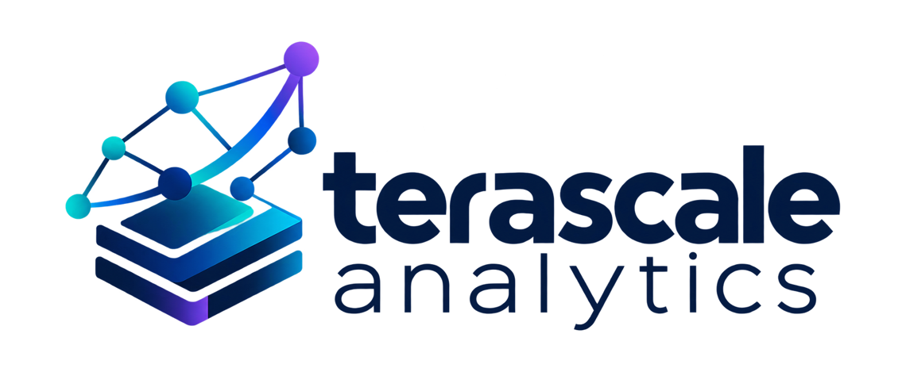

Contact
Find us
Cayman Enterprise CitySignal House
info@terascale.ky
Mailing address
10 Market StreetPO Box 256
Camana Bay, KY1-9006
Cayman Islands

We design and implement large scale statistical, econometric, optimization, and simulation models for use in high-stakes, contentious environments such as consumer and commercial litigation and regulatory inquiries.